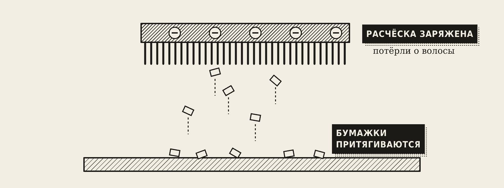
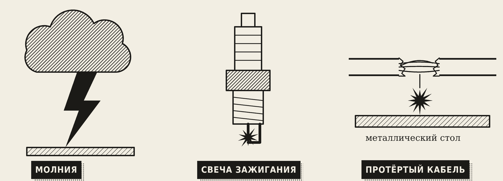
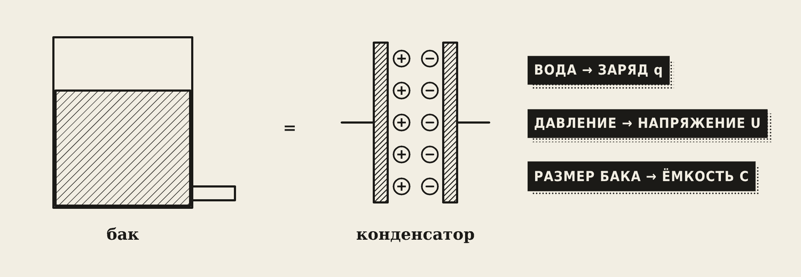
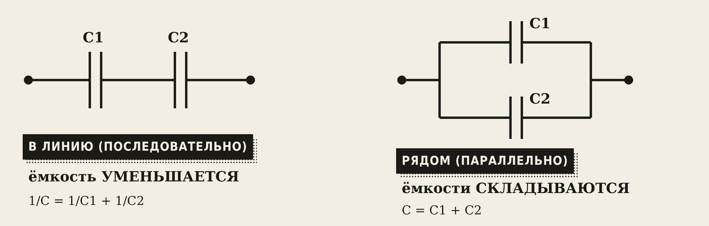
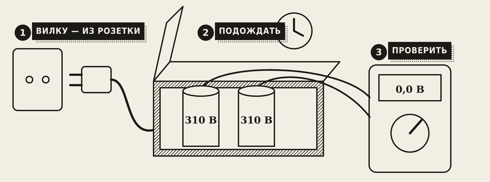

1. Электрическое поле

Потрите пластиковую расчёску о волосы — она начнёт притягивать мелкие бумажки. Расчёска получила заряд, а вокруг заряженного тела всегда есть электрическое поле. Его не видно, но оно действует на другие заряды с силой.
Насколько поле сильное, показывает напряжённость E. Между двумя пластинами, на которые подано напряжение U, напряжённость:
E = U / d, [В/м]
где d — расстояние между пластинами. Чем ближе пластины и чем больше напряжение — тем сильнее поле.
Напряжение U — это разность потенциалов между двумя точками, его измеряют в вольтах. Потенциал можно представить как «высоту» точки: ток течёт с высокого потенциала на низкий, как вода с горки.
Проводники и диэлектрики
- Проводники хорошо пропускают ток: медь, алюминий, сталь, вода с солью.
- Диэлектрики (изоляторы) ток не пропускают: резина, пластик, стекло, сухой воздух.
2. Пробой изоляции

Любой диэлектрик выдерживает поле только до определённого предела. Если поле слишком сильное, изолятор вдруг начинает пропускать ток — это пробой. Примеры:
- Молния — пробой воздуха между тучей и землёй.
- Свеча зажигания — пробой воздуха в зазоре, искра поджигает топливо.
- Протёртый сварочный кабель — изоляция истончилась, ток пробивает её на металлический стол или корпус.
Осторожно
Кабели с повреждённой изоляцией — частая причина поражения током и пожаров. Протёртое место нельзя просто «замотать изолентой» на сварочном кабеле: его ремонтируют специальными муфтами или меняют кабель.
3. Конденсатор

Конденсатор — это две металлические пластины, разделённые изолятором. Он накапливает заряд, как бак накапливает воду. На схеме его рисуют как две короткие параллельные чёрточки: —| |—.
Главная характеристика — ёмкость C: сколько заряда q конденсатор принимает на каждый вольт напряжения.
C = q / U, [Ф]
Фарад — очень большая единица, поэтому на корпусах пишут микрофарады: 1 мкФ = 0,000001 Ф.
Ёмкость больше, если пластины больше по площади и ближе друг к другу.
Где применяют: вспышка фотоаппарата, блоки питания и зарядки, пуск двигателя насоса или кондиционера, сварочный инвертор.
4. Соединение конденсаторов и энергия

- Параллельно (рядом): ёмкости складываются, C = C1 + C2. Площадь пластин как будто выросла.
- Последовательно (в линию): 1/C = 1/C1 + 1/C2 — ёмкость уменьшается. Два одинаковых конденсатора дают половину ёмкости одного.
Запомните
У конденсаторов всё наоборот, чем у резисторов: у резисторов последовательно сопротивления складываются, а у конденсаторов складываются ёмкости при параллельном соединении.
Заряженный конденсатор хранит энергию:
W = C · U² / 2, [Дж]
Пример. Конденсатор инвертора: C = 1000 мкФ = 0,001 Ф, U = 310 В. W = 0,001 · 310² / 2 = 0,001 · 96 100 / 2 ≈ 48 Дж. Этого хватает для сильного удара и ожога.

Осторожно
Почему опасно касаться выводов отключённого инвертора. Конденсаторы внутри заряжены примерно до 310 В и держат заряд и после отключения. Перед ремонтом: вынуть вилку, подождать несколько минут, проверить напряжение мультиметром. Только когда 0 В — можно работать.
Словарик
- Электрическое поле — особый вид материи вокруг заряженных тел; действует на заряды с силой.
- Напряжённость E — сила поля, E = U / d, в В/м.
- Диэлектрик — материал, который не пропускает ток.
- Пробой — диэлектрик под действием сильного поля начинает пропускать ток.
- Конденсатор — две пластины и изолятор между ними; накапливает заряд.
- Ёмкость C — сколько заряда принимает конденсатор на 1 В, в фарадах.
Эталоны в тетрадь
Перепишите в тетрадь по билетам — каждый эталон на отдельную страницу, с рисунком и строкой «Мой пример».
Электрическое поле
Электрическое поле: напряжённость, потенциал, напряжение. Проводники и диэлектрики, пробой изоляции.
- Электрическое поле — особый вид материи вокруг заряженных тел. Оно действует на заряды с силой. Пример: наэлектризованная расчёска притягивает бумажки.
- Напряжённость E показывает, насколько сильное поле: E = U / d, [В/м].
- Напряжение U — разность потенциалов между двумя точками, [В].
- Проводники пропускают ток (медь, алюминий, сталь). Диэлектрики не пропускают (резина, пластик, воздух, стекло).
- Пробой — когда поле слишком сильное и диэлектрик начинает пропускать ток. Примеры: молния, свеча зажигания, пробой протёртой изоляции сварочного кабеля.
Конденсатор
Конденсатор: устройство, ёмкость и единицы, от чего зависит ёмкость. Применение.
- Конденсатор — две металлические пластины и изолятор между ними. Накапливает заряд, как бак — воду. (Нарисуйте обозначение —| |—.)
- Ёмкость C = q / U, измеряется в фарадах [Ф]. На практике — в микрофарадах: 1 мкФ = 0,000001 Ф.
- Ёмкость больше, если пластины больше и ближе друг к другу.
- Где применяют: вспышка фотоаппарата, блоки питания, пуск двигателя насоса, сварочный инвертор.
Соединение конденсаторов и энергия
Последовательное и параллельное соединение конденсаторов. Энергия конденсатора. Почему опасно касаться выводов отключённого инвертора.
- Параллельно (рядом): C = C₁ + C₂. (Схема.)
- Последовательно (в линию): 1/C = 1/C₁ + 1/C₂ — ёмкость уменьшается. Два одинаковых дают половину. (Схема.) У резисторов — наоборот.
- Энергия конденсатора: W = C·U² / 2, [Дж].
- Безопасность: конденсаторы инвертора (≈ 310 В) держат заряд после отключения. Перед ремонтом — подождать несколько минут и проверить напряжение мультиметром.
Проверь себя
Сначала ответьте сами — в тетради или вслух. Потом нажмите на вопрос, чтобы увидеть ответ.
1Почему пробивает изоляцию протёртого сварочного кабеля?
Изоляция стала тонкой, поле в ней слишком сильное — диэлектрик начинает пропускать ток.
2От чего зависит ёмкость конденсатора?
От площади пластин (больше — ёмкость больше) и расстояния между ними (ближе — больше).
3Два конденсатора по 10 мкФ соединили последовательно. Какая общая ёмкость?
5 мкФ: при последовательном соединении двух одинаковых ёмкость вдвое меньше.
4Почему нельзя сразу лезть в отключённый сварочный инвертор?
Конденсаторы внутри заряжены примерно до 310 В и хранят заряд. Нужно подождать и проверить мультиметром, что напряжение 0 В.
5Как работает пробой изоляции и где его видно?
Сильное поле заставляет диэлектрик пропускать ток: молния, свеча зажигания, протёртый кабель.
6Конденсаторы 10 и 20 мкФ соединили параллельно. Общая ёмкость?
30 мкФ — при параллельном соединении ёмкости складываются.
Ответы к «Проверь себя»
- Изоляция стала тонкой, поле в ней слишком сильное — диэлектрик начинает пропускать ток.
- От площади пластин (больше — ёмкость больше) и расстояния между ними (ближе — больше).
- 5 мкФ: при последовательном соединении двух одинаковых ёмкость вдвое меньше.
- Конденсаторы внутри заряжены примерно до 310 В и хранят заряд. Нужно подождать и проверить мультиметром, что напряжение 0 В.
- Сильное поле заставляет диэлектрик пропускать ток: молния, свеча зажигания, протёртый кабель.
- 30 мкФ — при параллельном соединении ёмкости складываются.